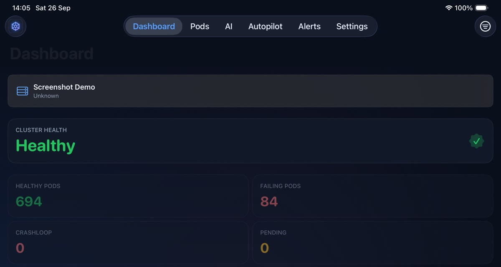
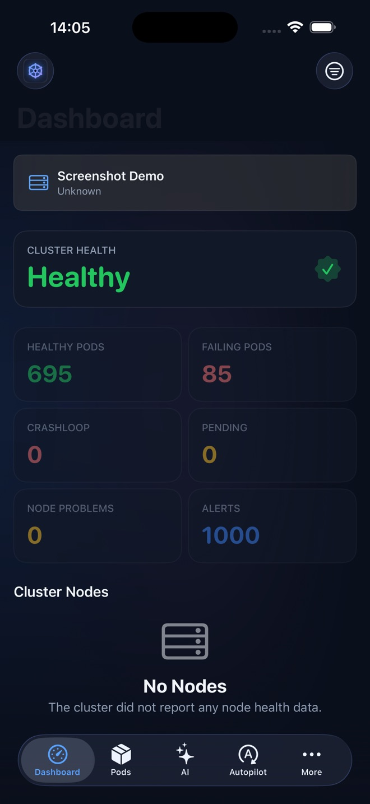
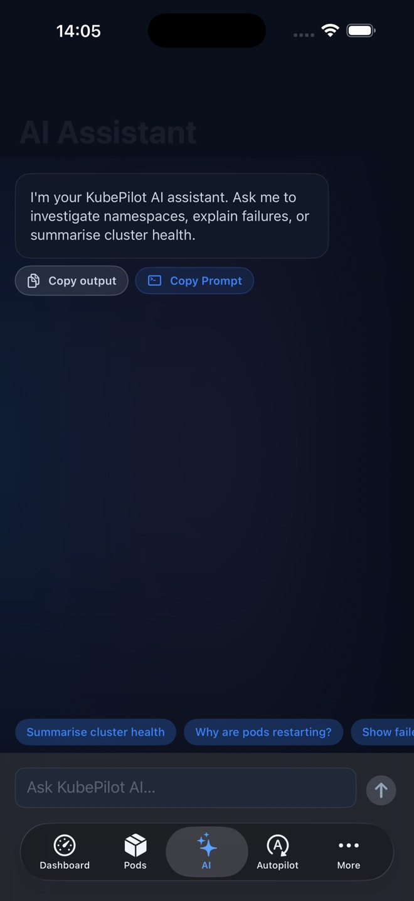
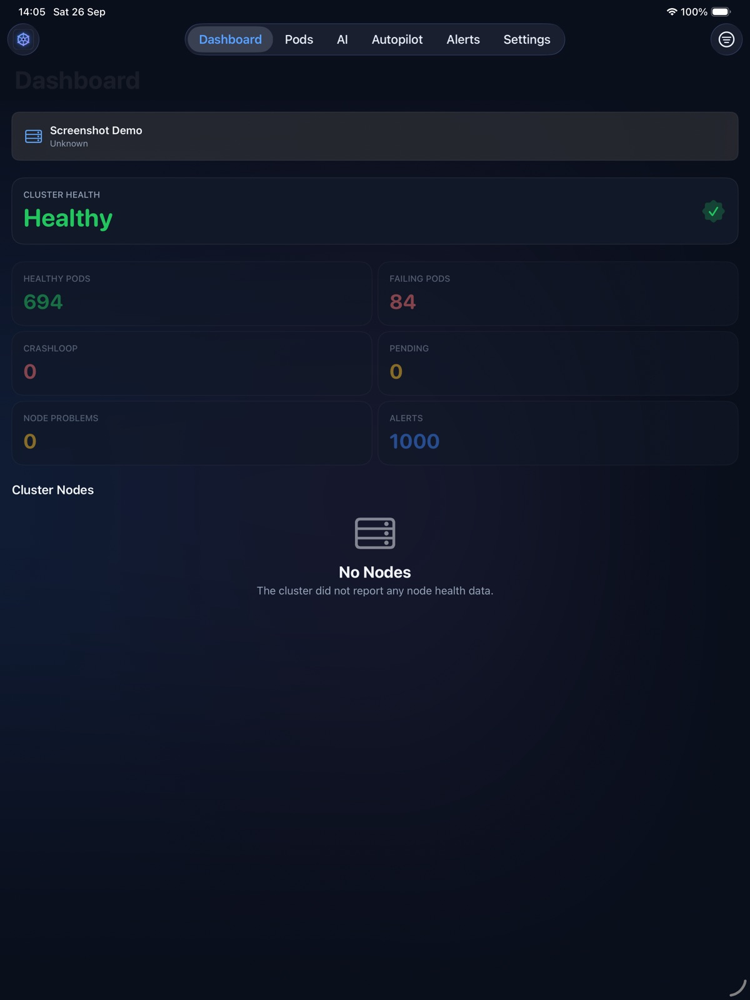

KubePilot for iPhone and iPad Is Now on the App Store

KubePilot for iPhone and iPad is live on the App Store. It's free, it's native SwiftUI, and it puts the same incident loop you know from the KubePilot web cockpit (spot the problem, understand it, act on it) in your pocket.

Why a mobile app for Kubernetes?
Pages don't wait until you're at your desk. When an alert fires on the train, at dinner or at 2am,
the first ten minutes go on one question: how bad is this, and what's actually broken?
Opening a laptop, connecting to the VPN and typing kubectl get pods -A is slow.
The KubePilot app answers that question in seconds, and if the issue can wait until morning
you'll know that too.
What you can do from your phone
📊 Cluster health at a glance
A health score, healthy vs failing pods, CrashLoop and Pending counts, node problems and alerts, plus the top CPU, memory and storage consumers so you can see what's eating the cluster.
🔎 Pod triage
Search and filter pods by CrashLoop, OOM or Pending across namespaces. Open one to see its overview, events, sanitized YAML and live-tailing logs.
🧠 AI root-cause analysis
Tap Analyse with AI on a failing pod, or ask the assistant a question in plain English. It uses the AI engine on your KubePilot server, including local LLMs via Ollama.
🚨 Alerts & RCA history
Anomalies, cluster events and saved RCA reports in one timeline, so you can catch up on what happened overnight.


Built for the iPad too
On iPad, KubePilot uses the extra space for a full dashboard. Keep it next to your laptop as a second screen during an incident, or take it into the war room.

Your clusters, your data
KubePilot isn't a SaaS. The app talks directly to your own KubePilot server, whether that's on your LAN, in your VPC or behind your ingress. There is:
- No KubePilot account to sign up for and no cloud relay in the middle.
- No data collected. No analytics or tracking SDKs. The App Store privacy label says "Data Not Collected".
- Credentials kept in the iOS Keychain, with optional Face ID or passcode lock.
- AI requests go to your server's configured provider. The app asks for your consent before anything is shared and names the provider.
Siri and Shortcuts
App Intents let you ask Siri or the Shortcuts app for a cluster health summary, or jump straight to your failing pods, without tapping through the app.
Try it in 30 seconds
Install the app
Get KubePilot on the App Store. It's free on iPhone and iPad.
Tap “Try the live demo”
Explore a hosted demo cluster straight away, with no server needed.
Connect your own cluster
Run the open-source KubePilot server (Helm, Docker or from source), then enter its URL and a bearer token or basic-auth credentials in the app:
helm upgrade --install kubepilot charts/kubepilot \
-n kubepilot --create-namespaceKubePilot is open source (Apache 2.0). The iOS app, server and dashboard all live in one repo. Issues, feature requests and stars are all welcome.
View KubePilot on GitHub →What's next
Push notifications for critical alerts, Live Activities for in-flight incidents and an Apple Watch glance are on the roadmap. If something would make your on-call shifts easier, open an issue.